As part of my job search, I first came across the Livin' America application and decided to download and test it firsthand. Evaluating real products in real time allows me to understand user touchpoints and onboarding dynamics right away.
"Sometimes, it's all about the first impression."
Overview & Key Reflections
During an 80-minute walkthrough of Livin' America, the app demonstrated strong user engagement while teaching key real-life skills and navigating everyday logistics. To unlock its full impact, strategic refinements focus on expanding audience reach, simplifying language clarity, and deepening immersive simulation mechanics.
Target Audience
Highly effective for young adults (~18 years old) learning independent living and core practical life skills.
Expanding Horizons
Opportunity to capture demographic groups in their late 30s/40s navigating career pivots or life transitions.
Localization & Accessibility
Simplifying jargon ensures accessibility and seamless comprehension for younger audiences, global users, and non-native English speakers.
Feature Expansion
Potential to add stock market simulations, interview practice mini-games, and real-world employment law modules.
Chronological Playthrough Breakdown
| Step Analysis & Recommendation | Screen Capture |
|---|---|
|
1. Legal Disclaimer Screen
Player Observation: "The disclaimer needs to be simpler to understand."
Usability Context: Dense legal copy right at initial launch can create slight onboarding friction.
Optimization Idea: Show main legal points in short bullet points, with a link to read full terms if needed.
|
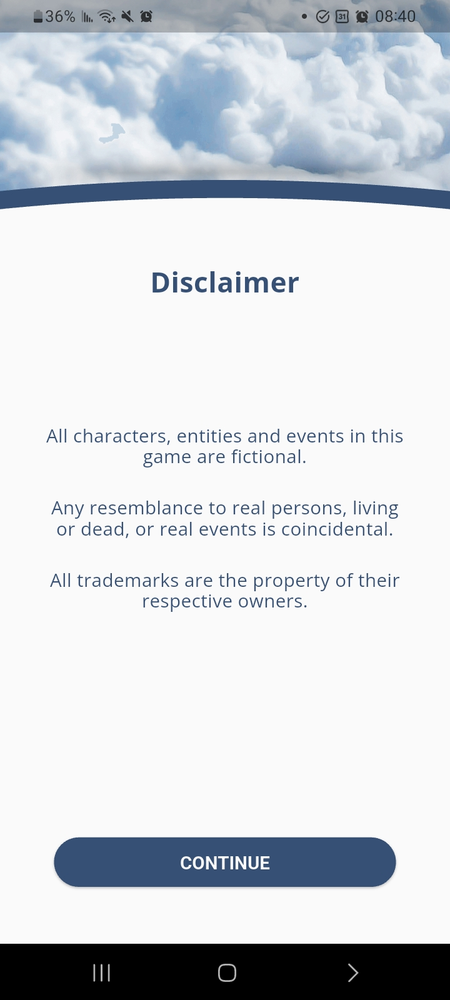 |
|
2. Login Options & Button Layout
Player Observation: "The login options: lower button is cut off. Add another login option, like username and password. No email as a password?"
Usability Context: Layout elements clipping on certain screen dimensions affect visual polish, and offering standard login fields accommodates varied player preferences.
Optimization Idea: Fix bottom spacing so buttons aren't cut off, and let users log in using standard email and password fields.
|
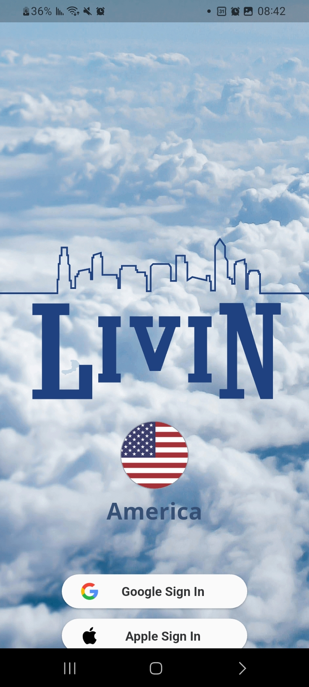 |
|
3. Google Login Transition Animation
Player Observation: "After choosing to log in via Google by choosing my email account, the student's photo animation moved onto the screen in a funky way and was slow."
Usability Context: Transition timing immediately following authentication shapes the player's initial impression of performance.
Optimization Idea: Speed up the loading animation and make it fade in smoothly so players aren't left waiting.
|
|
|
4. Graduation Prompt Framing
Player Observation: "’During an inspiring graduation... Who are you... truly?’ maybe some direction needed, like a sub-heading saying ‘question’, ‘scenario,’ ‘hypothetical question,’ or real-life question" - and then the question. Options: How asking others how they see you isn't a way to be honest with yourself?
Usability Context: Providing subtle structural indicators helps orient players when encountering philosophical or reflective story choices.
Optimization Idea: Add a clear label like [Scenario Question] above the prompt, and write choices as direct first-person statements.
|
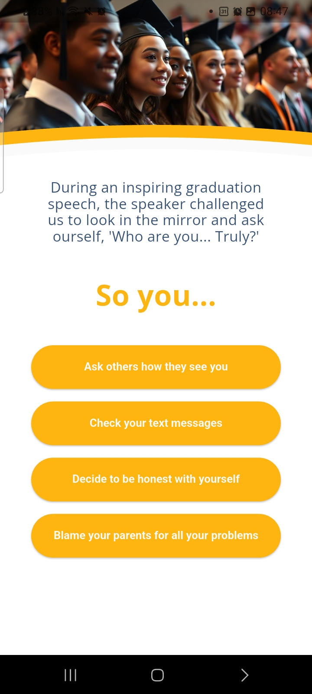 |
|
5. Trait Selection Guidance & Mechanics
Player Observation: ""Upon reflection, you select..." - your character as? Can I select more than one? More direction is needed. Also, eventually only 1 characteristic is needed - why only one?"
Usability Context: Only one characteristic is allowed without clear direction. Clear visual UI affordances establish expectations regarding single vs. multi-select choices.
Optimization Idea: Use standard radio selection buttons and add a short note explaining that players should pick only one trait.
|
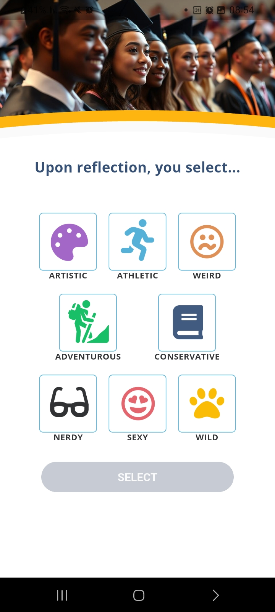 |
|
6. Microcopy, Global Accessibility & Localization ('Hazard Pay')
Player Observation: "I chose "Artistic" and got a message: "Your imagination deserves hazard pay." I love the humor here! I just wondered if non-native English speakers might miss the joke if they aren't familiar with "hazard pay.""
Usability Context: Witty personality enriches brand character, while improving accessibility ensures seamless comprehension for international players and non-native speakers.
Optimization Idea: Keep the fun tone, but make sure core game rules are explained simply so non-native English speakers can easily follow.
|
|
|
7. Family Wealth Text Logic
Player Observation: "Family Wealth screen: the two sentences appear to contradict each other with the word "But," but they are not contradicting each other. Suggestions: Everyone's story starts somewhere... Each story has its own beginning. / Everyone's story starts at the beginning... But not everyone starts the same way."
Usability Context: Transitional conjunctions ('But') work best when highlighting direct contrast to preserve natural reading rhythm.
Optimization Idea: Rewrite text to fix logic: 'Everyone's story starts at the beginning... But not everyone begins with the same financial resources.'
|
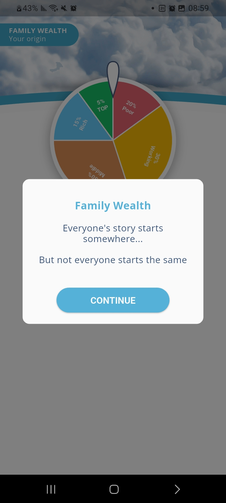 |
|
8. Spinning Wheel Progress & Context
Player Observation: "After spinning the wheel, I got a middle-class standard. I waited like 30 seconds before continuing, and my screen was stuck. I couldn't go back or move on to the next stage. All I saw was "Not bad..." Also, before spinning the wheel, I was told that before asking my family for money, I should check their status by spinning the wheel. No direction mentioned why I need to ask my family for money."
Usability Context: A temporary screen freeze created a progress pause, and adding context prior to spinning establishes clear player expectations.
Optimization Idea: Fix the 30-second screen freeze bug, and add a brief note before spinning to explain why players are checking family wealth.
|
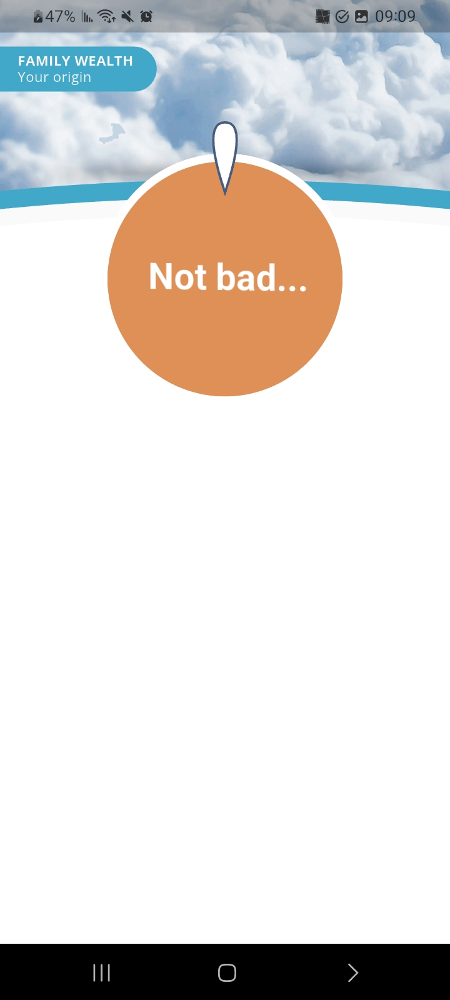 |
|
9. Game Start Hook & Session Saving
Player Observation: "I like the fact that when I clicked the app icon and entered the game, the first screen was a task to answer a call and enter my name as it appears on my credit card. It spiced up my moment with some excitement. On the other hand, what about logging in to my account, or what about continuing the stage I stopped at last time?"
Usability Context: The interactive phone call is an engaging onboarding hook; pairing it with state persistence ensures returning players resume progress smoothly.
Optimization Idea: Keep the interactive call for brand-new users, but let returning players automatically resume where they left off.
|
N/A |
|
10. Player Age Consistency
Player Observation: "I got a new screen saying I'm 18, but when I entered my age at first, it was more than 18: What do you have to "sell everything" while you are only 18?"
Usability Context: Aligning story copy dynamically with registration inputs maintains narrative continuity and honors user choices.
Optimization Idea: Use the exact age entered during registration in the story copy instead of setting everyone to 18.
|
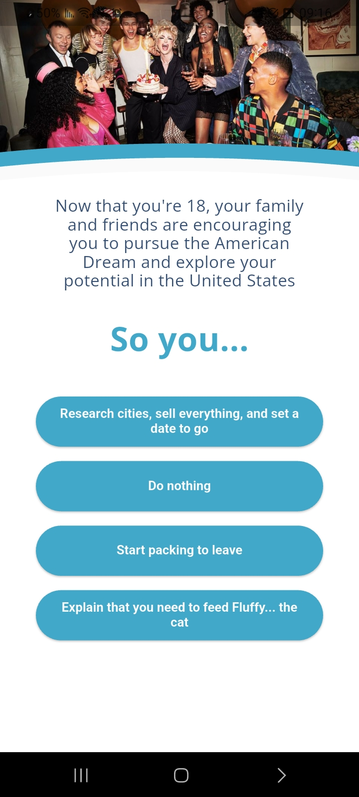 |
|
11. City Selection Narrative & Airline Tie-in
Player Observation: "When I chose Chicago as the metropolis to move to, I got a screen saying "Chicago, IL is a great selection..." - Why is it a great selection (choice)? Suggestions: Replacing the word "select" with "choice" seems to be more personal... Then, we can add a reason why Chicago is a great choice... And then, the connection to "American Airlines" makes sense and feels related."
Usability Context: Framing destination choices with rich atmospheric detail allows corporate partner integrations (like American Airlines) to feel organic.
Optimization Idea: Add a quick detail about Chicago (food, culture, airport hub) before introducing the American Airlines integration.
|
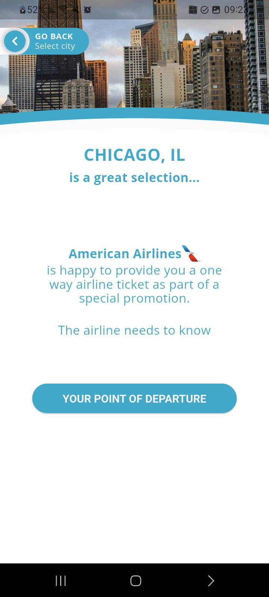 |
|
12. Google Maps Zoom Sequence
Player Observation: "In the following screen: Your adventure begins from..." the first Google Maps location I see is Chicago, and Chicago is the final destination. Suggestion: Set up the Google Map to zoom out enough to see all continents."
Usability Context: Starting the map view focused immediately on the destination skips the visual storytelling of traveling from an origin point.
Optimization Idea: Start the map zoomed out to show starting point, then smoothly animate camera moving across the map to Chicago.
|
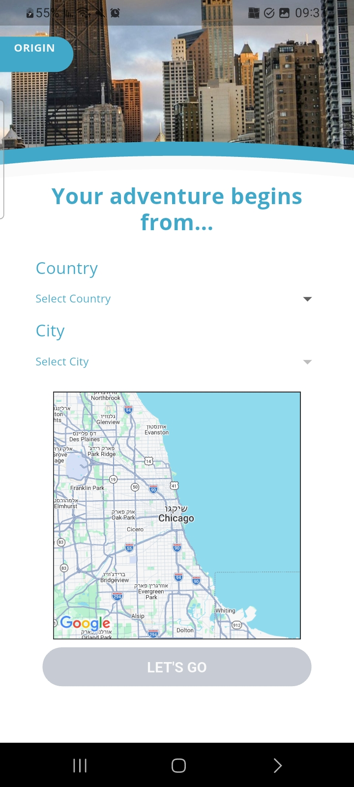 |
|
13. Customs Screen Scroll Pace & Touch Controls
Player Observation: "The following screen showing the US Customs and Border Protection shows automatic titles moving from down to up at high speed. And when I tried to control the rhythm with my finger on the screen, I got a message: "Don't Worry," without being able to read the titles and be familiar with the rules."
Usability Context: Fast automatic scrolling makes text hard to digest, and overlay prompts when touching the screen interrupt manual reading control.
Optimization Idea: Let players drag and scroll the text manually at their own speed, and remove popup warnings that interrupt reading.
|
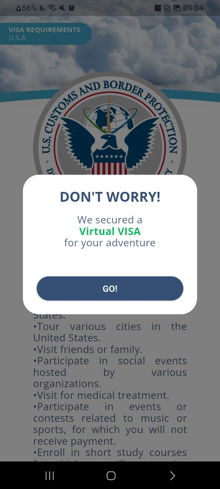 |
|
14. Apartment Selection Options & Typography
Player Observation: "After choosing an apartment, I got a message saying that my family covered the first month... The app asked me: "Take it" or "Keep looking" - without saying, "In case you want to upgrade your apartment and your family paid for the first month, would you like to keep it or keep looking for a better option"? Also, the font in the buttons isn't the same size."
Usability Context: Explicit action labels make decision trade-offs clear, while consistent font sizing reinforces UI visual hierarchy.
Optimization Idea: Make button font sizes equal, and rename options clearly: 'Accept Free Apartment' vs. 'Explore Upgrade Options'.
|
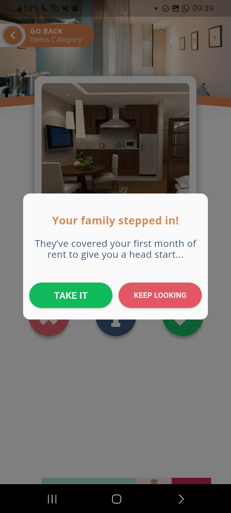 |
|
15. Creative Career Paths & Information Cards
Player Observation: "I chose to work in Design, and there were only 2 options: architect and interior designer. I felt like I would like a representation of graphic designers. I thought that the information behind the cards was very helpful and detailed enough. I was able to make a sensible decision."
Usability Context: The flip-card design pattern effectively informs player choices; expanding career options enhances creative representation.
Optimization Idea: Keep flip card design, but add more creative job paths like Graphic Designer and UX/UI Designer.
|
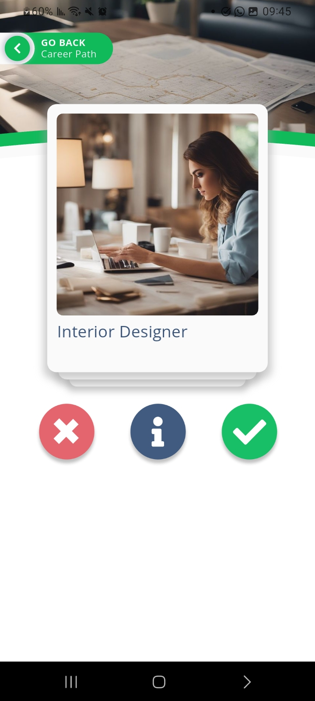 |
|
16. Job Market Realism & Interactive Interview Concept
Player Observation: "I got a job as a staff member in the hospitality field. I think that the app demonstrates real-life situations, as I am in a pool of potential employees looking for a job and am dependent on an HR recruiter. Suggestion: I am curious to see development in this process and maybe see the recruiting process, like an interview demonstration."
Usability Context: Simulating an applicant candidate pool creates authentic engagement and realistic career immersion.
Optimization Idea: Add interactive recruitment features like job interview practice mini-games to make hiring feel realistic.
|
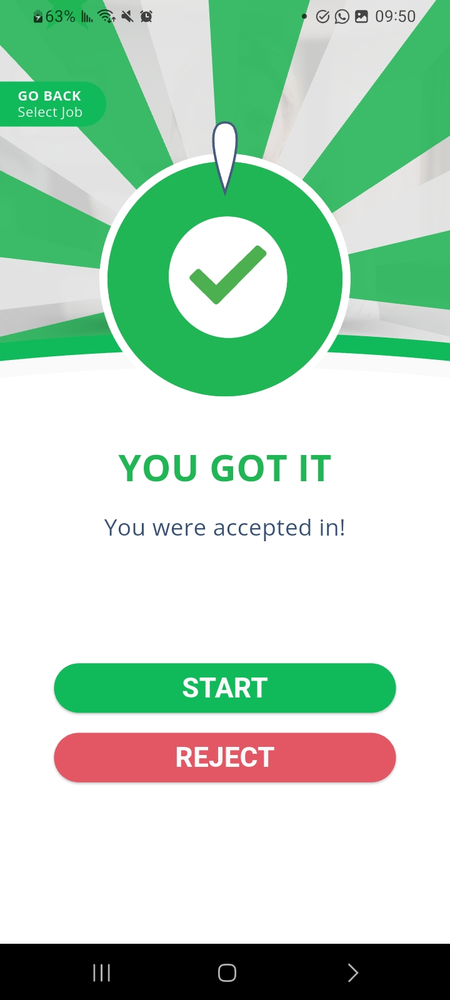 |
|
17. Demographic Representation Across Life Stages
Player Observation: "I was also curious why the app decided that I am 18 years old, especially since I registered as being older than that. Moving to another country, specifically the USA, is part of the lives of people older than 18 who have higher education and work experience."
Usability Context: Relocation experiences vary widely across age groups and life stages; offering broader demographic pathways expands player resonance.
Optimization Idea: Offer optional life stage options (e.g., Student, Young Professional, Career Relocator) during account setup.
|
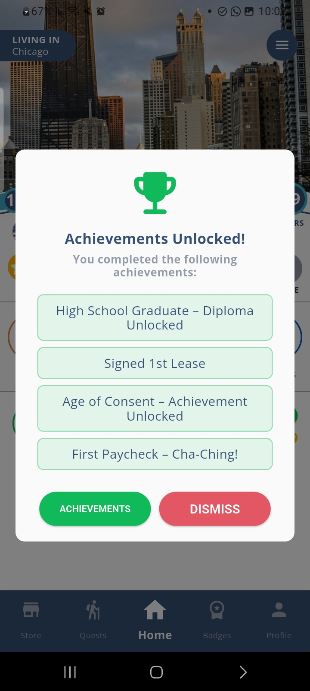 |